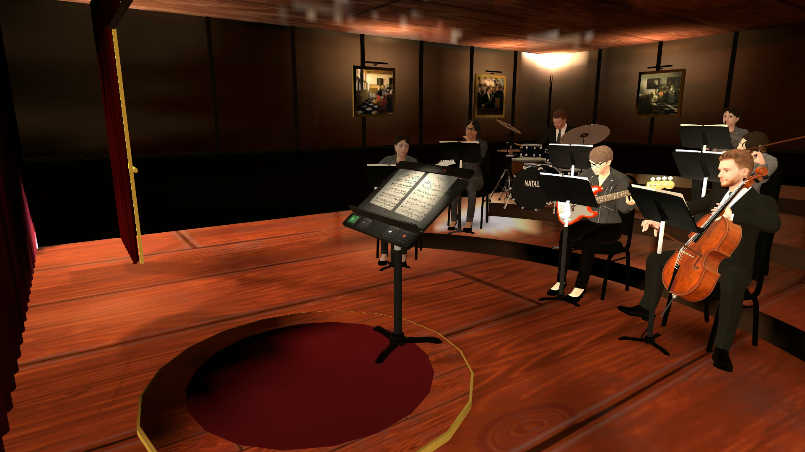

SONIC Lab · Politecnico di Torino · MUSMET
Conduct an orchestra that isn’t in the room.
Arman Naseri Far, with Prof. Cristina Rottondi, Dr. Leonardo Severi and Dr. Matteo Sacchetto
Gesture
Room
Place
On a video call there is no beat to follow: the picture is late, flat and small.
Nobody shares a space: no podium, no rows, no eye contact.
Every voice comes from one point. You can’t hear who is where.
Gesture
Room
Place
The conductor’s head and hands reach every musician, live.
One rehearsal hall, shared by everyone.
Every musician is heard from their own chair.
Sent from the headset, not filmed by a camera.
The conductor on the podium, each musician in a chair, playing.
The sound follows the conductor’s head, as in a real hall.

The conductor
Turns the score pages on the stand.
Starts and stops the rehearsal.
Head and hands reach every musician.
What a musician sees
Head, hands, eyes and face come from the headset as they move. Musicians follow a person, not a video.
The ensemble
Ten sections, from strings to drums. Each looks the way they chose and plays in time with the others.
The musician
The chair they choose is where the conductor sees them, and where their sound comes from.
A browser for the picture, a small audio box for the sound.
Spatial sound
In front or behind, left or right, above or below: each musician is heard from where they sit, as in a real hall.
Listen: the piano plays through our spatial engine as the head turns. Levels shown are the ones measured in the lab.
Whoever runs it
Who is in, whose sound is connected, and whether the conductor is ready.
A new audio box is named with one click. The top line says when to start.
Measured in the Sonic Lab, November
9
ms
Sound there and back between two audio boxes
~4.5 ms one way — well inside the 25 ms ensemble limit
17
dB
Between the ears as the conductor turns the head
Real microphone, real headset
72
fps
In the headset, all ten sections seated
Meta Quest Pro, the headset’s full rate
8
voices
Placed in space at once
7 ms to place them, on a Raspberry Pi
Spatial audio by atmoky (atmoky.com). MUSMET project, SONIC Lab, Politecnico di Torino.
Behind the demo
Meta Quest headset: the hall, the score, head, hands and face.
Raspberry Pi: link to the musicians, spatial engine, low-latency audio.
A browser for the picture, a small audio box for the sound. Anywhere.
Seats, looks, the session page. Brings everyone together.
Wi-Fi
gesture
sound, 9 ms